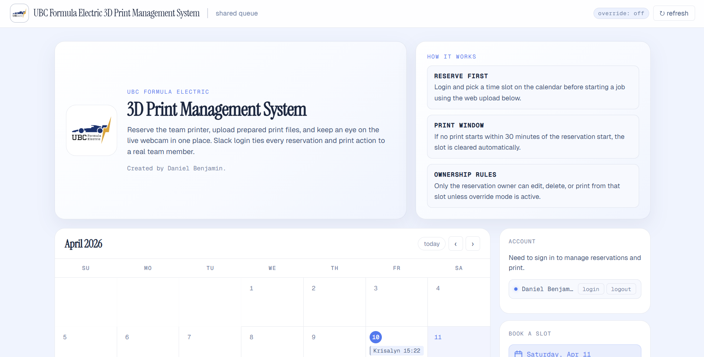
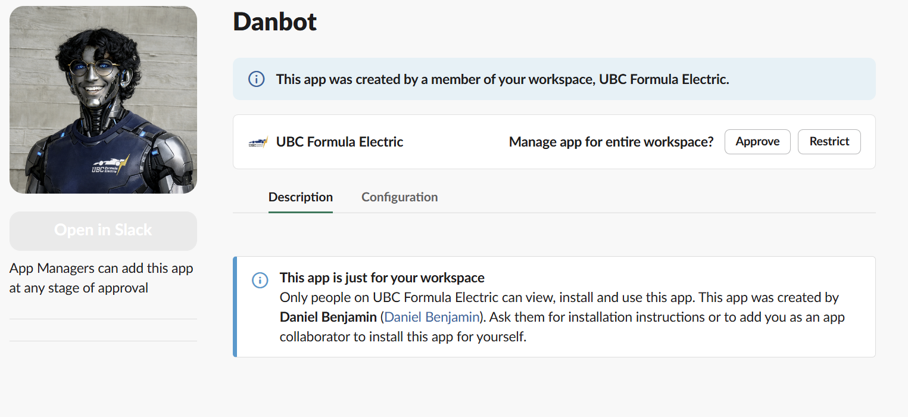
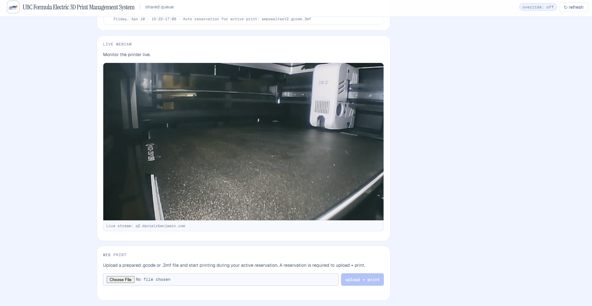

DanBot: 3D Printing Command Center
A reservation, remote-printing, and monitoring system built around UBC Formula Electric's shared 3D printer — so team members know when it is available before making a trip to the bay.
Project Summary
- Combined Slack authentication and reservation logic with Moonraker/Klipper control.
- Used Cloudflare tunnelling and service alerts around the team's existing workflow.
- A web portal and Slack bot for the team's shared 3D printer.
- Reservation, monitoring, and remote print-start controls.
- Members can confirm availability, reserve time, watch the printer, and start prepared files remotely.
- Slack alerts reduce unnecessary trips to the bay.
Problem
Starting a team print used to require a trip to the bay, often in the evening, just to reach the printer in person. There was no reservation system and no reliable way to check availability remotely. Someone could make the trip expecting to begin a job, only to find that another member had already started a ten-hour print.
The wasted trips and uncertainty were the real problem. Using Python, I developed DanBot: a custom web portal and Slack bot around our team's workflow: reserve the shared machine, see what it is doing, and start a prepared print remotely instead of treating access as first-come, first-served guesswork. It runs locally on a desktop in the bay, and a Cloudflare Tunnel exposes the web service securely while the application continues to communicate securely with the printer over the local network.
Reservation System
The reservation layer is the part I had not found in the existing printer-management tools I evaluated. Team members sign in through Slack, book a time slot, and own that reservation. A print must begin within the reservation window or the slot is released, while an override mode gives administrators a way to handle exceptions.

Architecture
DanBot calls existing MCP servers where they are useful: UptimeRobot for the ANSYS and SVN servers, and OctoEverywhere for printer status. The web portal is separate from that MCP path and connects directly to Klipper through Moonraker for live state, the webcam feed, and print control.

Printer Monitoring
The custom dashboard uses the Klipper/Moonraker API directly to show printer status and a live camera feed, and it can upload and start a prepared G-code or 3MF file during the user's active reservation. This is the local, purpose-built core of the system rather than a view assembled through MCP.
For notifications, I leveraged OctoEverywhere's existing event handling instead of rebuilding a solved problem immediately. OctoEverywhere sends print events to a Cloudflare Worker, which forwards them into the team's Slack channel.

Results
DanBot turns printer access from a physical guessing game into a coordinated team workflow. Members can check the queue and printer remotely, reserve time, and receive Slack notifications without spending an evening travelling to the bay only to discover the machine is occupied.
Now that I have more experience with the Klipper/Moonraker API, the next step is to move notification handling onto the local integration as well. That will remove the remaining OctoEverywhere dependency and make the setup more self-contained without changing the Slack experience for the team.